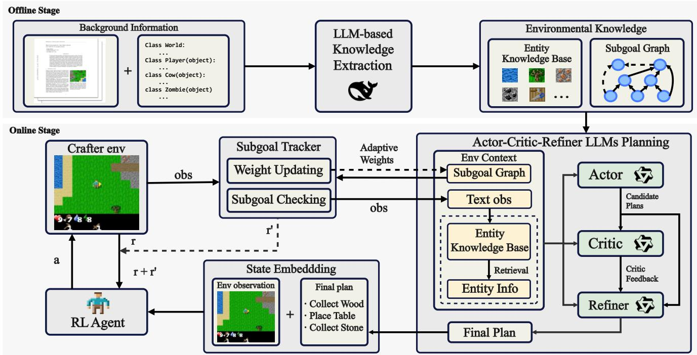

微观深度解读
为您精选了 6 篇高质量 AI 论文的深度解析
#1
项目反应理论
大型语言模型
泛化能力
任务难度
数据集设计
简介：本文提出了一种基于项目反应理论（IRT）的方法，系统评估大型语言模型（LLMs）在不同任务难度下的泛化能力。研究发现，LLMs的跨难度泛化能力有限，训练于简单或困难数据无法在全范围内实现一致性提升。该方法提供了更客观的难度评估，强调在数据集设计和模型评估中考虑任务难度多样性的重要性。

#2
强化学习
可验证奖励
大型语言模型
安全性
能力权衡
简介：本文提出了一种强化学习与可验证奖励（RLVR）框架，旨在解决大型语言模型（LLMs）在微调过程中面临的安全性与能力之间的权衡问题。通过理论分析和实证研究，RLVR能够在提升模型推理和编码能力的同时，保持或改善安全性，挑战了传统方法的安全能力权衡假设，为安全AI的开发提供了新思路。

#3
大型语言模型
评估偏差
校准数据集
自适应算法
不确定性量化
简介：本文提出了一种插件式框架，旨在校正大型语言模型（LLM）评估中的偏差并量化不确定性。通过利用校准数据集估计模型的特异性和灵敏性，构建偏差调整的估计量和置信区间，同时引入自适应算法优化样本分配，从而提高评估的准确性和效率。

#4
子目标图
大型语言模型
强化学习
动态反馈
开放世界游戏
简介：本文提出了SGA-ACR框架，旨在解决大型语言模型（LLM）在强化学习中的规划与执行不对齐问题。通过整合环境特定的子目标图和多LLM协作规划，该框架有效生成可执行的子目标，并通过子目标跟踪器实现动态反馈，显著提升了任务执行的可靠性和质量。在开放世界游戏“Crafter”的实验中，SGA-ACR展现了优越的性能。

#5
抵押贷款
大型语言模型
领域自适应预训练
指令残差技术
智能自我路由机制
简介：本文提出了MortgageLLM，一个专为抵押贷款金融领域设计的双专家大型语言模型。通过持续预训练和指令残差技术，该模型有效平衡了领域知识和指令遵循能力。其双轨架构分别优化对话问答和结构化任务，结合智能自我路由机制，显著提升了在问答、摘要和分类任务上的性能，解决了传统模型在专业领域应用中的局限性。

#6
法律AI
对抗性LLM代理
形式化推理
逻辑一致性
SMT求解器
简介：本文提出了L4M框架，结合对抗性LLM代理与SMT求解器，解决了现有法律AI系统在形式化推理和逻辑一致性方面的不足。L4M通过法律条款形式化、双重事实提取和求解器中心裁决，实现了从非结构化文本中提取事实并生成可审计的法律判决，显著提升了准确性、鲁棒性和可解释性。